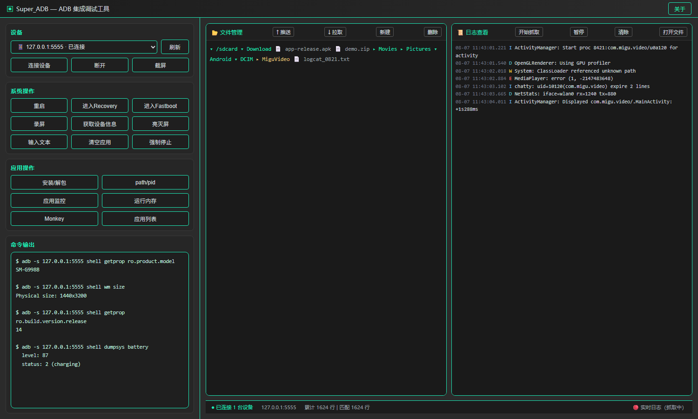
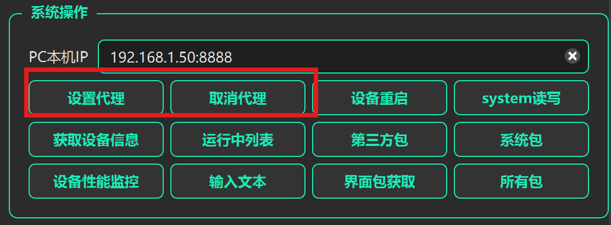
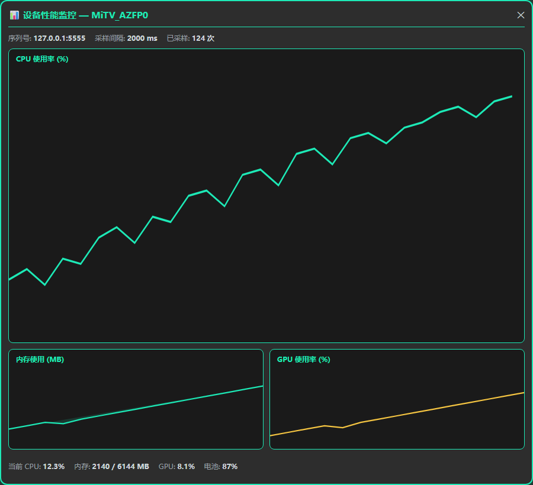
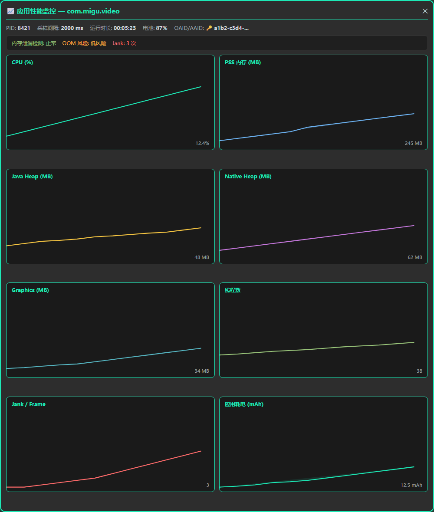
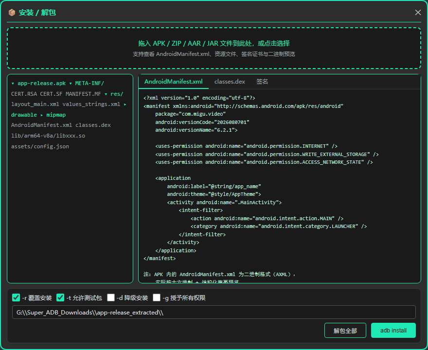
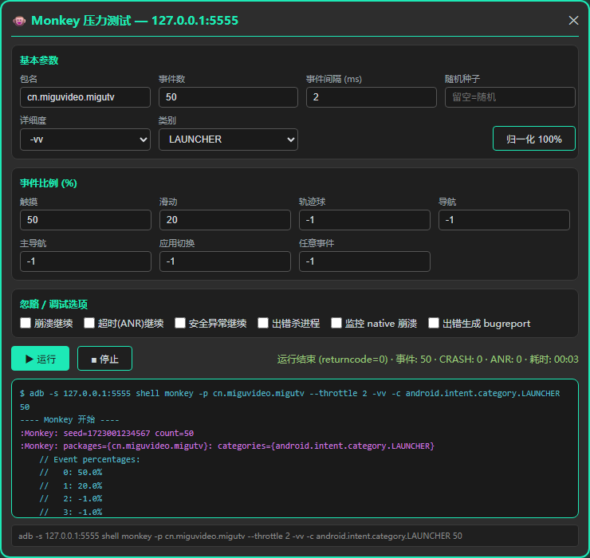

Super_ADB
基于 PySide6 的 ADB 集成调试工具 · 深色主题 · 强调色 #1de9b6
📌 项目简介
Super_ADB 是一款面向 Android 开发与测试的桌面调试工具，整合设备管理、系统操作、应用操作、文件管理、日志抓取、性能监控、Monkey 压测等高频 ADB 能力，所有子页面嵌入同一主窗口，通过 QSplitter 分屏协作。
- 技术栈Python 3 + PySide6 + .ui 布局 + QSplitter 分屏
- 入口
Super_ADB_Main/Super_ADB_Main.py
- 主题深色卡片 + 青绿高亮边框 + 绿色外发光（统一弹窗风格）
🖥️ 主界面
左侧为设备 / 系统 / 应用操作区与命令输出；右侧为文件管理 + 日志查看分屏。所有按钮按真实 UI 还原，命令输出实时回显 adb 执行结果。
- 设备连接、刷新、截图、录屏、重启、进入 Recovery/Fastboot
- 安装/解包、path/pid、应用监控、运行内存、Monkey、应用列表
- 文件管理器支持上传、下载、新建、删除
- 日志查看器支持实时抓取、暂停、过滤、本地文件加载

图 1 · 主窗口布局与功能分区
⚙️ 系统操作
主窗口左上角的快捷功能区，把代理、重启、root、设备信息、包列表、性能监控等高频 ADB 命令收敛成一排按钮。新增「PC本机IP」输入框，启动自动填充本机IP:8888，设置代理时可直接编辑 IP 与端口。
- 设置/取消 HTTP 代理，支持自定义 IP:端口
- 一键设备重启、system 读写 remount
- 批量获取设备信息（CPU/GPU/MAC/OAID 等 20+ 项）
- 运行中/第三方/系统/所有包列表
- 入口直达设备性能监控、输入文本、当前界面包名

图 2 · 系统操作栏（红框为设置代理 / 取消代理）
📊 设备性能监控
独立窗口，2 秒定时采样 + 后台线程读 ADB，实时绘制 CPU、内存、GPU 滚动曲线，底部汇总当前数值与电池状态。

图 3 · 设备级 CPU / 内存 / GPU 监控
📈 应用性能监控
针对单个应用采集 7 项指标：CPU、PSS 内存、Java Heap、Native Heap、Graphics、线程数、Jank / Frame，并附带内存泄漏检测、OOM 三层风险判定、运行时长与电池/耗电信息栏。

图 4 · 应用级 7 项指标 + 泄漏 / OOM / Jank 检测
📦 安装 / 解包
拖拽或点击选择 APK / ZIP / AAR / JAR，树形展示包内条目；文本文件直接预览（utf-8 / gb18030 / latin-1 兜底），二进制文件显示大小与前 256 字节十六进制。AndroidManifest.xml 等 AXML 文件按二进制摘要预览。底部支持 adb install 参数勾选与一键解包。
- 文件类型徽标：XML / TXT / DEX / JSON / IMG / SO / BIN / CERT / DB 等
- 安装参数：-r 覆盖、-t 测试包、-d 降级、-g 授权
- 大 zip 异步加载 + 分批建树，避免 UI 卡顿

图 5 · APK 树形结构与内容预览
🐵 Monkey 压力测试
可视化配置包名、事件数、事件间隔、随机种子、详细度、事件比例、忽略/调试选项与类别。流式输出 monkey 日志，关键事件高亮（CRASH 红 / ANR 橙 / Events injected 绿 / :Monkey: 紫），实时统计事件数、CRASH、ANR 与耗时。
- 事件比例一键归一化到 100%
- 进程退出监视线程 + stdout 关闭，确保运行结束状态即时同步
- 识别 // Monkey finished 与 Events injected 主动收尾，避免状态卡住

图 6 · Monkey 参数配置与运行结果
🔗 WiFi 配对码连接
针对 Android 11+ 强制走「配对码」的无线调试流程：输入手机弹窗里的 IP / 配对端口 / 6 位配对码，支持剪贴板一键粘贴自动解析，后台 adb pair+adb connect 串行执行；配对成功自动回填主窗口输入框并刷新设备列表。
- 三输入框分别用
QRegularExpressionValidator / QIntValidator 校验，6 位码输第 7 位会被吞
- 「📋 粘贴」从剪贴板自动解析「IP:端口 配对码」与「WLAN 配对码 XXX」两种常见格式
- 配对超时 20s、连接超时 12s，UI 永不卡死
🔧 其它亮点
- 日志抓取：QProcess 流式 logcat，批量缓冲写入磁盘，停止时异步 terminate/kill，单次渲染最多 500 行，避免点击「停止」卡顿。
- 局域网 ADB 扫描：一键扫描同网段（CIDR / 范围 / 单 IP），后台 100 线程并发 socket 探测 + ADB 握手校验（CNxn），结果列表支持「一键连接全部 / 双击连接 / 复制所有 IP」。
- WiFi 配对码连接：Android 11+ 强制走「配对」流程的 GUI 封装，输入 IP/配对端口/6 位码或一键剪贴板解析，后台线程跑
adb pair + adb connect 绝不卡 UI。
- 性能优化：日志全量过滤移到后台线程；ScrollChart 缓存 QFont/QPen/QColor；ADB 设备/应用信息批量采集。
- Windows cmd 兼容：复杂命令走 base64 编码脚本 + shell=False，绕过 cmd.exe 嵌套引号问题。
- 关于弹窗：无边框圆角卡片，展示公众号二维码、反馈文案与版本号。